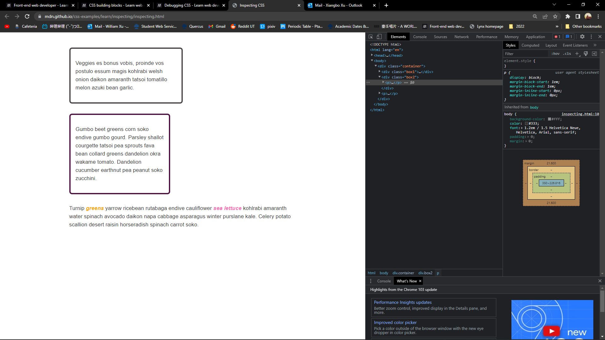

很多时候，CSS不会朝着你期望的方向进行styling。也许是selector没选中，也许是box的大小不同，所以debugging是很重要的css学习方法之一
这篇mdn文章会赘述如何找到市面上浏览器的开发者工具。虽然我一般使用chrmome，但是了解一下其他浏览器总归是好的。
某些浏览器会有其特殊的focus（关于devtools），但是总的来说，devtool的大体工作方式是不会变的。
使用鼠标右键一个page，或者使用ctrl + U可以看到该page的source code，即源码。但是这和devtool是两个东西，devtool内看得见DOM tree，也就是Document Object Model tree，以及devtool内的html panel的代码
使用DevTool时，html panel内的代码有可能是被normalized过的，也就是自动更改过的。比如我这一段话是由tag p开头，但是我故意打错了一个结尾，打成</g>，打开Devtool内的html panel，可以看见他被自动更改了。
查看源代码，即view source展示的是服务器内储存的源码。对于我使用的chrome，使用documentation来了解devtools的用法
右键该page，选择inspect，或者使用f12选择select element，右边弹出来了两个panel，左边的为DOM tree，右边则是选择的box的css rule。
仔细看rules panel，可以看得出来有的css rules是缩减了的，比如margin，此时可以将其放大成full form，也可也在里面更改，调整css rule以达到debugging的目的。
在rules panel内，若点击某个property，可以选择更改其属性。也可也在rules panel内新增property value pair。
打开MDN的Example file，可以看见有两个box。其实他们两个box的width是设定的相同值，但是第一个看起来却比第二个要大。 这个时候就可以使用inspect来查看并比较两个box的不同点。

打开inspection，然后选中这俩box的其中一个，可以看见最右边有一个panel显示了box的图例。此时选中computed，便可以查看该box的所有css rules。这俩box的不同点是，第一个box使用的是standard box，而第二个box使用的是boxing-sizing: border-box。因此第二个box要小一点。
当开发css时，有的时候会发现某些元素无法应用上css，一般来说这种情况是因为有更specific的rule覆写了目前的css rules，使用devtool可以解决此问题
在mdn的example page处，有一段话内含有粉色以及橘色的字。打开devtool可以看见橘色的字有两个css rule，一个是更specific的class，一个是更大范围的element。而大范围的element styling被cross掉了。也就是说另一个class更详细
Devtools一般用于发现以及寻找问题来源。那么发现问题后的一步便是解决问题。以下几个为解决问题的insights
很多时候就是没法找到问题，此时别钻牛角尖，可以选择找点别的事情转移注意力，说不定回来的时候再一看就知道怎么回事了
浏览器默认你的html以及css文档是正确编写的，但如果你写错了，浏览器不会报错，而是会试着理解你想写什么东西并且实现出来。因此很重要的一步是确保html以及css没有写出语法问题以及其他小毛病。可以使用css以及html validator来找出有可能的问题。
浏览器会自动略过其看不懂的css rules。假设使用了浏览器不支持的property或者value，那么他会被跳过。此时可以使用devtool，一般会高亮显示出来compatibility issue。同时可以检查浏览器，或者propety的compatibility table。
像是上面提到过的一样，有的时候会有更specific的rule覆写了目前的css rule，使用devtools来查看具体的问题。
假设问题在经过了以上的步骤依然未解决，则需要一点系统的调查手段了。对于html以及css来说，使用reduced test cse是很好的办法
reduce test case说简单点便是将所有非故障元素全部排除，留下单独的出问题的代码。使用以下步骤:
此时经过了最大幅度的缩减，应该是看得出来问题在哪里了，即使一九不知道在哪里出来的问题，也可也找人问了。如果问题最后是浏览器的bug，可以找到浏览器的bug report来提交bug